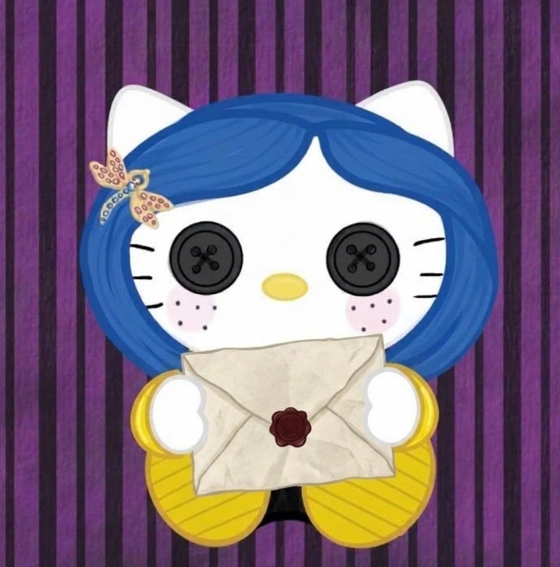

Hay algo que quiero decirte... 💗
Toca la Hello Kitty para descubrirlo.

Hay cosas que uno simplemente no puede evitar admirar, y contigo me pasa bastante. No sé si te lo han dicho antes, pero tienes unos ojos en los que fácilmente podría perderme, de esos que dan ganas de quedarse mirando un ratito más.
Tus labios tienen algo curioso, no sé si es tu sonrisa o la forma en que hablas, pero hay algo en ellos que hace que hace que sea imposible que pasen desapersividos. Y tu pelo... no sé cómo explicarlo, pero tiene ese no sé qué que hace que hasta los días más normales se vean un poquito más bonitos Y qué decir de tu piel color canela, que tiene ese tono tan bonito y cálido que parece guardar un poquito de los atardeceres.
Hay personas que tienen algo diferente, algo difícil de explicar, pero fácil de admirar. Y tu parece que tienes ese pequeño don.